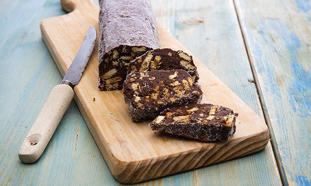

Salame de Chocolate
Descrição

Típica de Portugal e Itália, esta sobremesa é uma das preferidas dos mais pequenos, mas há adultos que também não lhe resistem.
Ingredientes
- manteiga 180 g
- açúcar
- chocolate em pó
- ovo M
- bolacha Maria
- açúcar
Passos
- Com a batedeira, bata a manteiga amolecida com o açúcar até ficar com uma pasta esbranquiçada.
- Junte o ovo, mexa bem com uma colher, e acrescente o chocolate, envolvendo bem.
- Junte as bolachas partidas em pedaços pequenos. Misture.
- Coloque o preparado numa folha de papel vegetal, fazendo a forma de um rolo. Aperte bem o papel com as mãos de forma a que o salame fique bem formado.
- Guarde no frigorífico até solidificar, de preferência de um dia para o outro.
- Na altura de servir, tire o papel vegetal e cubra o salame de chocolate com açúcar.